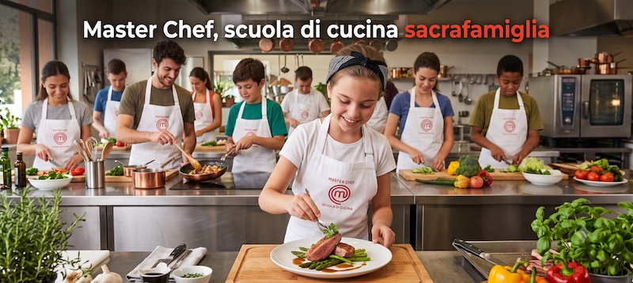
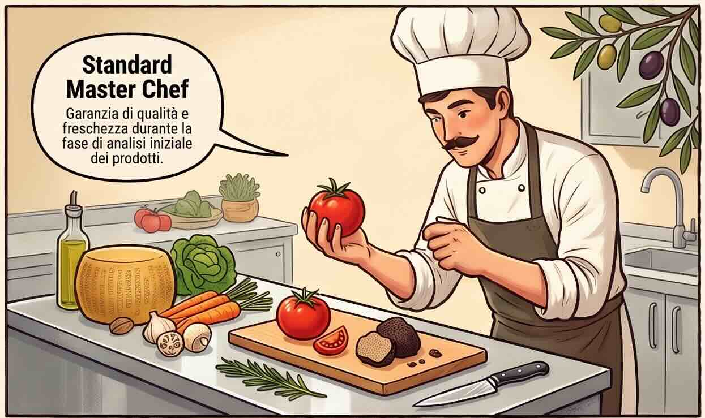
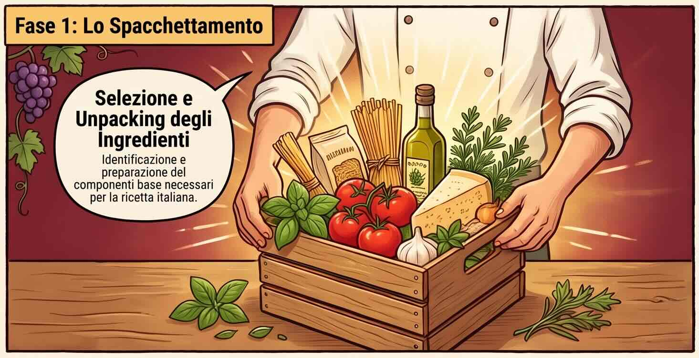
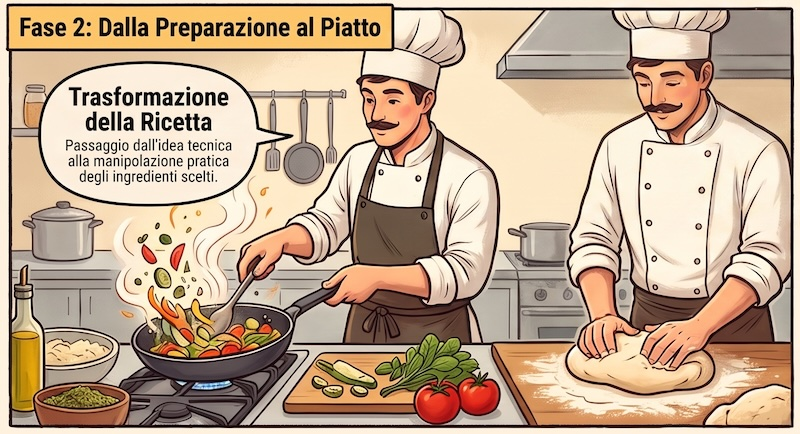
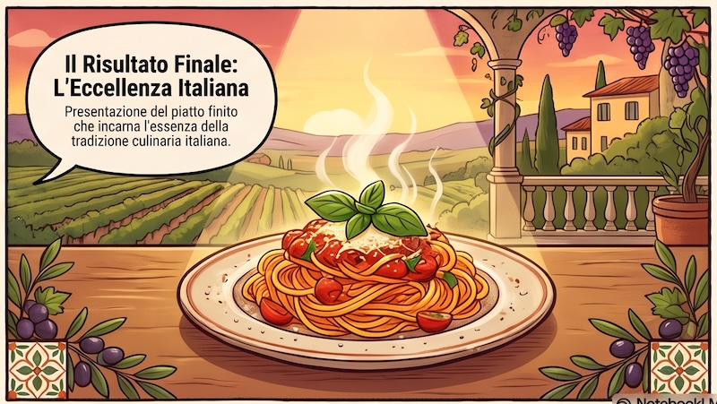

Novanta secondi. Poi il ricettario si apre.
«La cucina italiana candidata a patrimonio UNESCO» — Ministero della Cultura (MiC_Italia)
Da quel giorno la nostra cucina è patrimonio dell'umanità.
Non per un piatto. Per un modo di stare insieme a tavola — e per quello che ci mettiamo dentro.
L'UNESCO ha iscritto nella Lista Rappresentativa del Patrimonio Culturale Immateriale un elemento dal nome preciso: «La cucina italiana, tra sostenibilità e diversità bioculturale». La decisione è arrivata a Nuova Delhi, nella ventesima sessione del Comitato Intergovernativo. Nelle motivazioni non si parla di ristoranti né di chef famosi: si parla di una «pratica quotidiana che comprende conoscenze, rituali e gesti», di un «veicolo di cultura» che passa di generazione in generazione, e di saperi «non solo culinari, ma anche conviviali e sociali».
Tradotto: il patrimonio non è il piatto. È chi lo prepara, come lo prepara, e con chi lo mangia. Ed è anche che cosa ci mette dentro — perché una cucina che dura millenni è una cucina che fa stare bene chi la mangia. Per questo qui dentro ci sono i grandi classici, ma anche i piatti di tutti i giorni: i legumi coi cereali, le verdure di stagione, il pesce al forno. Quelli che nessuno fotografa e che tengono in piedi tutto il resto.
C'è una mossa che nessun ricettario scrive, e che in cucina vale più di una mantecatura perfetta. Non te la dico adesso: la riconoscerai da solo, probabilmente perdendo un tavolo. Ci torniamo a fine servizio.
Quattro passaggi, sempre gli stessi, dal prodotto crudo alla tavola. Sono gli stessi che farai tu.

Prima di cucinare si guarda. Un piatto non può essere migliore degli ingredienti da cui parte: la qualità non si aggiunge dopo.

Ogni ricetta chiede certe cose in certe quantità. Prenderne di più non migliora il piatto: lo spreca.

Qui i gesti diventano il piatto. E l'ordine conta: una ricetta è una sequenza, come un algoritmo.

Il piatto esiste davvero solo quando qualcuno lo mangia. È lì che la cucina diventa convivialità — la parola dell'UNESCO.
Prima voli sopra l'Italia e scegli una ricetta da provare, con calma. Poi arriva il servizio, e la calma finisce: la dispensa non basta per tutti. Gli stessi ingredienti servono a più piatti — — e ce n'è per circa due terzi di quello che ti verrà chiesto. Ogni volta che apri un barattolo, lo stai togliendo a un altro tavolo. Solo che quel tavolo non ha ancora ordinato.
Ogni azione costa minuti. E l'orologio va avanti anche mentre pensi: i tavoli aspettano, la pazienza scende.
Le quantità sono scritte, e sono vere. Quando un ingrediente entra in padella e confermi lo step, è speso. Non torna.
Una ricetta è una sequenza: se il guanciale arriva dopo la pasta, il piatto non è quello. Come in un algoritmo.
Spiegare a un tavolo che stasera non è possibile è una mossa legittima. Costa poco. Promettere e non riuscire costa molto di più.
Una previsione: il tuo secondo servizio andrà meglio del primo. E non perché ti ricorderai le ricette — quelle restano aperte davanti a te tutto il tempo. A fine partita ti chiederò di dirmi tu il perché.
Ogni piatto è sospeso sopra la regione che l'ha inventato. Tocca un titolo per prepararlo.
Il volo va da solo. Tocca un titolo per aprire la ricetta.
Lo stesso ricettario del volo, in forma di lista: si usa a tastiera e funziona ovunque.
Un approfondimento, e otto parole che ora sai usare
Il riconoscimento UNESCO si racconta in due minuti. Mentre il servizio parla, qui sotto le parole si accendono una a una: ognuna si apre quando la voce ci arriva. Alla fine le avrai tutte.
«La cucina italiana diventa patrimonio Unesco» — trmh24
Servizio in corso